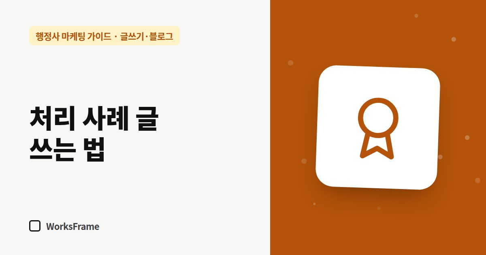

글쓰기·블로그
처리 사례 글 쓰는 법 — 개인정보는 지우고 신뢰는 남기기
한 줄 답
사례 글은 가능하면 고객 동의를 받고, 이름·국적·회사명처럼 알아볼 수 있는 정보를 지우세요. 결과보다 ‘어려웠던 점과 한 일’을 자세히 쓰는 게 핵심입니다.

“저와 비슷한 경우를 해 보셨나요?” 고객이 가장 궁금해하는 질문입니다. 처리 사례 글은 그 질문에 미리 답합니다. 대신 고객을 지키는 선을 먼저 정해야 합니다.
쓰기 전에: 동의
- 가능하면 고객에게 사례로 써도 되는지 묻고 기록을 남기세요
- 동의를 받아도 알아볼 수 있는 정보는 줄이는 것이 기본입니다
- 거절하면 쓰지 않거나, 여러 사례를 섞어 일반화한 “유형”으로만
지워야 할 정보
| 정보 | 처리 |
|---|---|
| 이름, 연락처, 신분증 번호 | 삭제 |
| 국적 + 나이 + 업종 + 지역 조합 | 둘 이상 겹치면 알아볼 수 있음 → 일반화 |
| 회사명, 공장 위치 | “경기 남부 제조업체” 수준으로 |
| 서류 사진 | 원칙적으로 올리지 않기 |
| 정확한 날짜 | “올해 봄” 정도로 |
사례 글 구성
- 상황 — 어떤 문제로 오셨나 (일반화해서)
- 어려웠던 점 — 보완 요청, 기한, 요건 해석
- 한 일 — 사무소가 확인하고 준비한 것
- 결과 — 사실 그대로, 과장 없이
- 비슷한 분께 — 먼저 확인할 것 두세 가지
“결과”보다 “어려웠던 점과 한 일”을 자세히 쓰는 것이 핵심입니다. 결과는 경우마다 다르지만, 과정은 전문성을 보여 줍니다.
결과 표현 주의
- “이 방법이면 누구나 됩니다” → X
- “이 경우 이런 서류를 보완해 진행했습니다” → O
자주 묻는 질문
거절된 사례도 써도 되나요?
오히려 도움이 됩니다. “이런 경우 거절될 수 있어 미리 확인이 필요합니다”는 고객에게 유용하고, 사무소가 정직하다는 인상을 줍니다.
사례를 몇 개나 모아야 하나요?
주력 업무마다 2~3개면 충분합니다. 없다면 “이런 경우를 상담합니다” 유형 글로 대신하세요.